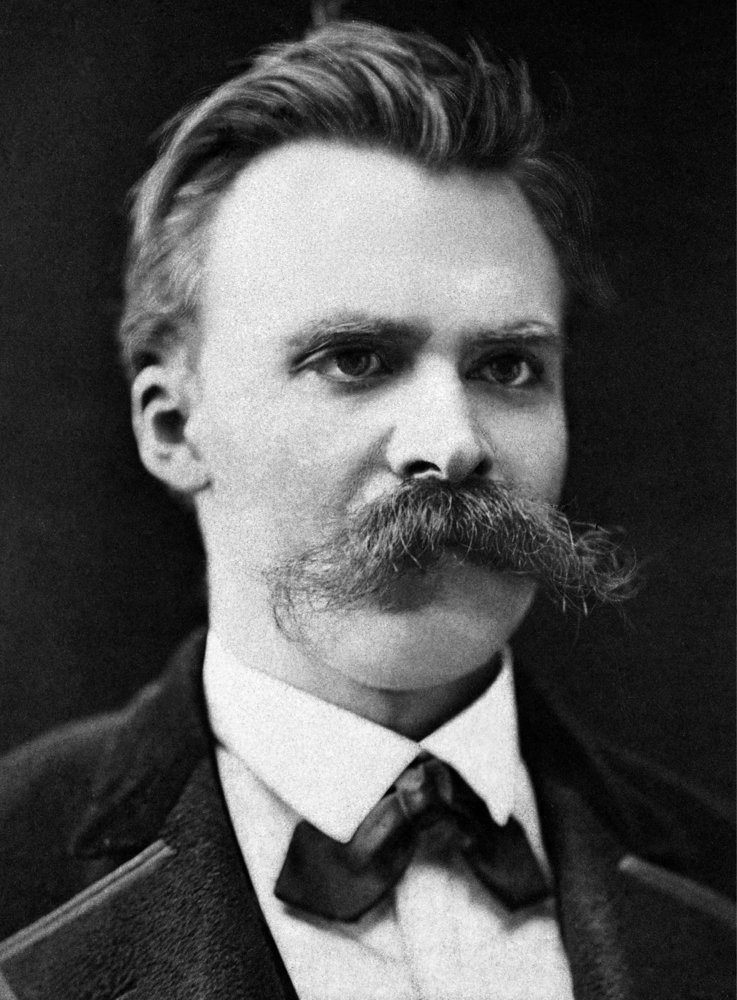
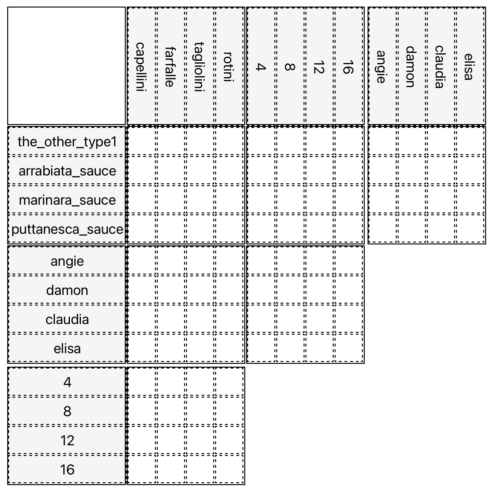
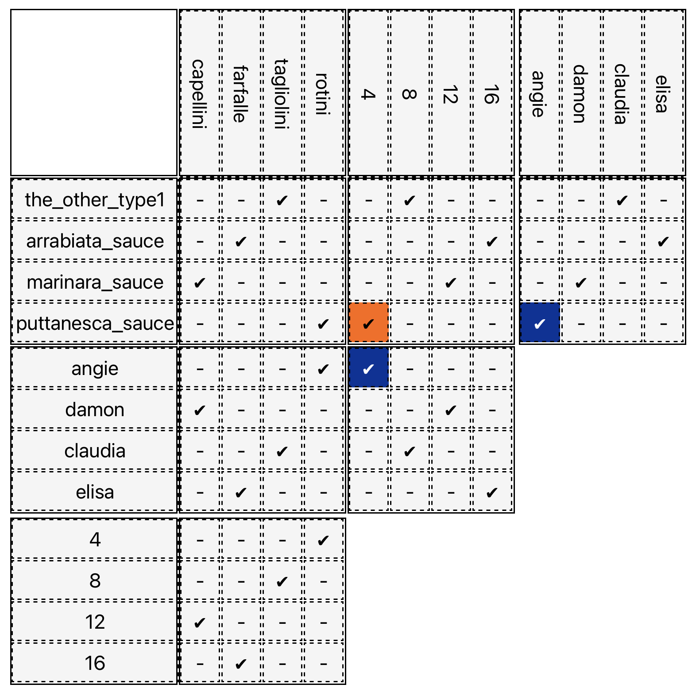
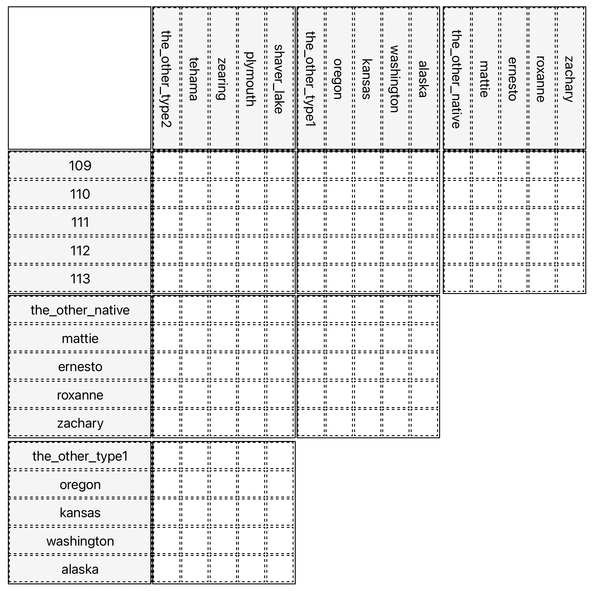
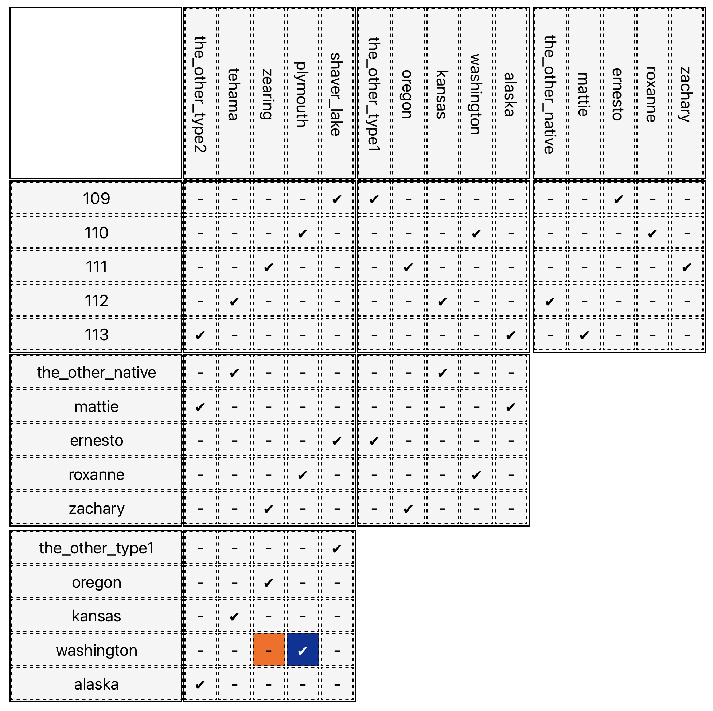

L5SORECOSemestre 5 · 2026/2027
Juan Luis (Gianni) Gastaldi
Cours 1
Introduction
14/09/2026

“Dans quelque coin reculé de l’univers ruisselant du scintillement d’innombrables systèmes solaires, il y eut un jour un astre sur lequel des animaux intelligents inventèrent le connaître. Ce fut la minute la plus orgueilleuse et la plus menteuse de l’« histoire universelle »…”




Gianni Gastaldi | L5SORECO